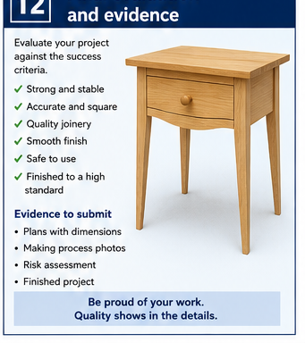

Your work
Student details
Your entries save automatically in this browser. Use Print / Save PDF before leaving the page.
Weeks 19-20
This module
Present the completed table, submit the evidence and reflect on the full project process.
Theory 1
Final presentation
Final presentation prepares the completed bedside table for teacher inspection without disguising faults or changing the approved design. Clean the table safely using the method directed in the workshop, removing dust, loose debris and handling marks without damaging the finish. Inspect the thick top for alignment and secure fitting, check that the tapered legs are consistent and stable, and confirm that the curved front apron matches the approved shape. Examine joints for neat fit and movement, review the finish under good light, and ensure all exposed edges are safe to handle. Test storage components or hardware only where they appear in the approved design. Place the table on a stable, level surface so its proportions, workmanship and stability can be inspected clearly. Prepare concise evidence labels that identify important features, checks and outcomes without repeating the full folio. Good presentation highlights the work accurately; it does not use props, camera angles or temporary adjustments to hide defects that should be recorded honestly.
Theory 2
Submission
Final submission should present a complete and organised record of the guided-course evidence that supports the finished bedside table. Check that the student name and class are correct on all submitted work. Confirm that each required module PDF is complete, readable and saved with a clear file name. Where required, include a folio backup or export so the evidence is not lost or left only on one device. Select clear final photographs that show the completed slim tapered-leg table, including important details such as the top, legs, curved front apron, joints, finish and any approved storage feature. Make sure all digital evidence matches the approved project and reflects the work actually completed in the workshop. Remove duplicate files, temporary versions and incomplete drafts before uploading or handing in the final submission. The website evidence should explain decisions, processes, checks and results, but it does not replace the practical project. The completed table remains the main evidence of workmanship, accuracy and safe workshop practice.

Theory 3
Reflection and workshop reset
Reflection should consider the skills, decisions, safety practices and quality achieved across the full bedside table project. Use evidence from the completed slim tapered-leg table to identify what improved during construction and what still needs development. Consider the accuracy of the tapered legs, top alignment, curved front apron, joint fit, surface preparation and finish where these were part of the approved design. Record one specific learning point, such as a marking, shaping, assembly or finishing technique that became more reliable through practice. Then identify one realistic improvement for a future project and explain how it would lead to safer, more accurate or more efficient work. Reflection is followed by a responsible workshop reset. Return tools and equipment to their correct locations, clean benches and work areas, and sort reusable offcuts and waste according to workshop direction. Leave floors, machines and shared spaces clear and safe so the next group can begin work without avoidable hazards or delays.
Core project resource
Bedside Table project plans
Use the supplied drawing as the controlling source for dimensions and construction details. Do not scale the on-screen image.
Open project plansGuided practice
Weeks 19-20 knowledge checks
Choose an answer, check it and use feedback to improve. The hint becomes more specific after an incorrect attempt.
Apply your learning
Scaffolded written responses
Write a genuine short answer first, then use the feedback and model response to improve it.
Finish the two-week block
Save your evidence
Download this completed module as a PDF before changing devices or clearing browser data.